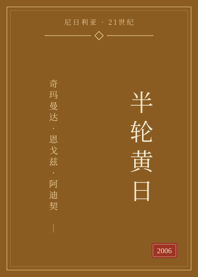
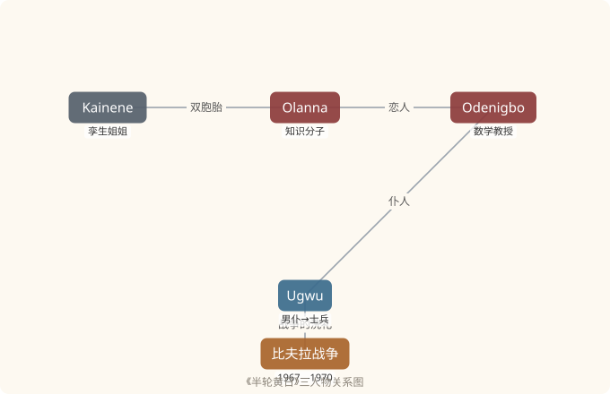

半轮黄日
一、基本信息
| 作者 | 阿迪契 |
|---|---|
| 成书/出版 | 2006年出版（Britannica） Chimamanda Ngozi Adichie — Encyclopaedia Britannica（百科全书） |
| 国别/地区 | 尼日利亚 |
| 时代 | 现当代 · 21世纪 |
| 体裁 | 长篇小说（历史小说） |
| 语言 | 英语 |

《半轮黄日》三人物关系图（人物关系图）
二、创作背景
题材：1967—1970年比夫拉战争（伊博分离战争——Britannica 语境：Adichie 是伊博人——通说待核）——'半轮黄日'为比夫拉国旗标志（通说待核）。
荣誉（Britannica）：'won the Orange Broadband Prize'（Orange Broadband Prize 2007——Britannica）。
三、内容脉络
三人物：Olanna（富家双胞胎姐姐）、Kainene（双胞胎妹妹）、Ugwu（乡间男仆）——1960s尼日利亚的知识分子与战争的交织（通说）。
比夫拉战争：饥饿、空袭、难民——'白人的红十字会也走了'（通说待核）——战争的残酷与日常的对照。
结局：战后——Olanna 与 Odenigbo 的婚姻、Ugwu 成为作家、Kainene 的失踪（通说）。
四、主要人物表
| 人物 | 身份 | 说明 |
|---|---|---|
| Olanna | 社会学教授之女 | '双胞胎'之一——与 Odenigbo 的知识分子爱情 |
| Kainene | 孪生姐姐 | '冷淡的实干家'——战争中失踪（通说） |
| Ugwu | 男仆→士兵→作家 | '从乡下到战争'的成长 |
| Odenigbo | 数学教授·革命者 | 比夫拉的知识分子（通说） |
五、主题与艺术特点
- 比夫拉战争： Britânica 语境中 Adichie 的'伊博身份'——战争的个人化书写（通说）。
- 阶级与种族：'精英知识分子的浪漫主义'与现实的碰撞（通说）。
- 艺术特点：多视角叙事、1960s时尚与战争细节的'文献感'（通说）。
六、影响与评论
- Britannica（Adichie 条）：Half of a Yellow Sun (2006, won the Orange Broadband Prize)——比夫拉战争的文学化。
Chimamanda Ngozi Adichie — Encyclopaedia Britannica（百科全书） - 2013年电影（Chiwetel Ejiofor/Thandiwe Newton——通说待核）。
Chimamanda Ngozi Adichie — Encyclopaedia Britannica（百科全书） - 中译：石平萍译《半轮黄日》（人民文学出版社，通说待核）。
Chimamanda Ngozi Adichie — Encyclopaedia Britannica（百科全书）
七、阅读建议
难点
- 比夫拉战争（1967—70）史——需要注释。
- 伊博文化（名字、谚语、食物）——配注释本。
- 石平萍译《半轮黄日》（人民文学出版社，通说待核）。
- 英文本：Fourth Estate（通说待核）。
通读四部分 → 精读饥荒与'难民'段 → 对照纪录片（通说待核）。
八、待核实
- 2006年 Fourth Estate/Knopf 出版（通说）细节待核。
- 石平萍译本信息待核。
- 2013年电影 Biyi Bandele 导演待核。
本页主要来源
阿迪契的其他收录作品：半轮黄日